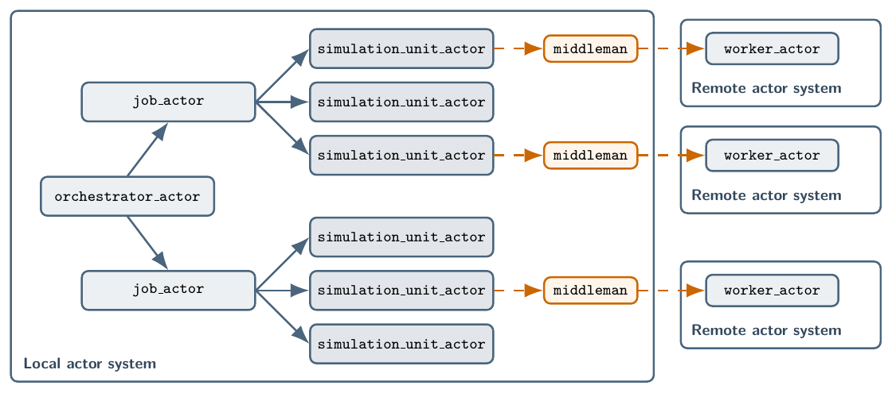
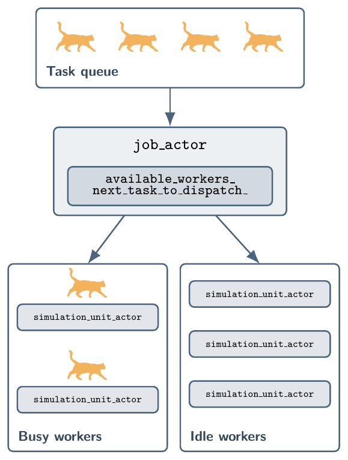

Architecture¶
Orchestration model¶
MIAOW executes simulation workflows through an actor hierarchy inspired by SUMMA-Actors (Klenk and Spiteri, 2024), as illustrated in the figure below:


A typical workflow includes the following steps:
Caller submits explicit tasks through
Runtime::submit_job(task)orRuntime::submit_job(tasks), optionally supplying a controller throughRuntime::submit_job(tasks, std::move(job_controller)). Alternatively,Runtime::submit_job(std::move(job_controller))lets the controller generate its own initial tasks. Runtime takes ownership of thestd::unique_ptr<JobController>.Runtime assigns a
job_idand sends the tasks and job controller toorchestrator_actor.orchestrator_actorspawns onejob_actorfor that job. The job actor owns the controller and task vector. For controller-only submission, it callsgenerate_initial_tasks()once at job start. It creates enough reusablesimulation_unit_actorworkers for the initial tasks, up toRuntimeOptions::max_workers_.The
job_actorgreedily dispatches tasks to availablesimulation_unit_actorworkers.Each worker resolves
Task::simulation_unit_id_, constructs a newSimulationUnit, executes the task, and returns aTaskResultto the job actor.After each task execution returns a successful or failed
TaskResult, thejob_actorcreates itsTaskRecord. When the controller’s task generation policy permits, it passes a read-only span of new completions to its controller, appends tasks returned by the controller’sgenerate_new_tasks()method to its task vector, and adds workers if needed. It then returns to step 4. This continues until no queued tasks remain to dispatch and no dispatched tasks are awaiting results, and the controller returns no new tasks.Runtime calls
JobController::finalize()once to collect structured job output. CompletedTaskRecordvalues are sorted byTaskIdand stored with this output in oneJobRecord.Runtime fulfils the caller’s
JobHandlefuture.
Each JobController selects a TaskGenerationPolicy through its constructor:
asynchronous(default): callgenerate_new_tasks()after each task reports a result.batch_synchronous: callgenerate_new_tasks()when every task in the current batch has reported a result. The initial task vector forms the first batch, and each returned vector forms the next batch.
Successful and failed results, including task timeouts, count toward batch completion; the controller decides how to handle failures. Both policies pass a std::span<const TaskRecord> containing only new completions to JobController::generate_new_tasks(), in completion order: one record for asynchronous callbacks, or the completed batch for batch-synchronous callbacks. The controller is responsible for maintaining its own history-dependent state across multiple invocations of generate_new_tasks().
Controller policies run serially in the job actor. Controller-only job submission calls generate_initial_tasks() before the initial dispatch and finalizes normally if it returns no tasks. Explicit task submission skips generate_initial_tasks(), including when an empty vector is supplied. Initialization errors propagate through JobHandle::get() and produce no final job record.
The following figure illustrates the task scheduling process managed by the job_actor in steps 4 through 6 of the above workflow, where the orange cat icons represent tasks:


The job actor adds workers as needed, up to RuntimeOptions::max_workers_, and retains them until the job completes or shuts down. Idle workers do not occupy CAF scheduler threads.
Task timing¶
TaskRecord::dispatch_offset_from_job_start_ stores the elapsed seconds from job start to task dispatch, measured using the same monotonic clock as run_time_. Dispatch precedes the worker beginning execution.
TaskRecord::worker_id_ identifies the zero-based worker actor within the job, independently of its scheduler thread or subprocess process ID. A worker can execute multiple tasks. Unassigned worker IDs are std::nullopt (null in JSON).
TaskRecord::run_time_ measures the interval from dispatch until the job actor records the result or timeout. It includes scheduling and communication overhead and any subprocess startup or cleanup. Adding it to the dispatch offset gives the time relative to job start when the terminal status was recorded.
Tasks that reach the job timeout before dispatch have a null dispatch offset and zero runtime. Dispatched tasks retain their dispatch offset and elapsed runtime up to the timeout. Unavailable dispatch offsets are std::nullopt (null in JSON).
Structured task output¶
TaskResult::output_ carries optional structured output as a caf::config_value. It supports scalar values and recursively nested lists and dictionaries, and remains available through the completed TaskRecord values passed to JobController::generate_new_tasks() and retained by the final JobRecord. Controllers are responsible for validating the structure and value types defined by their simulation units. Large time series, grids, and model state should be written to files and referenced by TaskResult::artifact_paths_.
When RuntimeOptions::output_root_ is configured, each task’s structured output (or a null value) is included in the job_record.json written when the job completes.
CAF uses MIAOW’s inspect() functions to collect each job record’s fields. nlohmann/json then writes the record to a JSON file. It also handles JSON text parsing and formatting for realization files and GeoJSON. Saved records retain CAF’s type annotations and duration strings, with enough digits to round-trip finite double values. Non-finite numerical values are written as JSON null.
Structured job output¶
JobController::finalize() returns optional structured output as a caf::config_value, with null as the default. Runtime retains the result in JobRecord::output_ and includes it in job_record.json when output is enabled.
The job actor calls finalize() once when creating the final record, including for empty jobs and job timeouts. At a timeout, the controller can return its accumulated state; synthetic timeout records are not passed to generate_new_tasks(). Finalization is serialized with task-generation calls and should return promptly. Controller errors and runtime shutdown produce no final record. Exceptions from controller hooks propagate through JobHandle::get().
Warning
With CAF 1.1, task and job output must not contain null list elements or dictionary values: binary deserialization fails. Returning caf::config_value{} for the entire output is supported.
Simulation unit execution¶
The Task::simulation_unit_id_ field selects the SimulationUnit implementation that
executes the task. SimulationUnitRegistry::add<SimulationUnitType>(...) registers a unit constructed and executed in the parent process, while SimulationUnitRegistry::add_subprocess(executable, lifetime) registers an internal SimulationUnit implementation that delegates each task to the supplied executable.
Every simulation_unit_actor constructs the selected SimulationUnit and calls execute(task). In-process units registered using SimulationUnitRegistry::add<SimulationUnitType>(...) return an immediate TaskResult or CAF error. A subprocess unit returns a delegated CAF response while its actor-owned state starts or reuses the subprocess, sends the serialized Task, receives TaskResult, and completes required cleanup without blocking a parent scheduler thread. The child process implements the Task to TaskResult contract through run_subprocess_worker() and does not receive the parent registry.
A subprocess task timeout terminates and reaps the child before returning the failed result. A job timeout marks all unfinished tasks as failed and requests worker shutdown, with subprocess cleanup proceeding asynchronously. Running in-process evaluations are not interrupted by either timeout; their worker actors can shut down only after execute() returns.
The SubprocessLifetime argument to add_subprocess(...) controls whether the child process is started and stopped for each task or retained for reuse across multiple tasks.
SubprocessLifetime::single_task starts one child for a task and stops and reaps it before delivering the result. SubprocessLifetime::persistent retains a child only after a successful task. An idle persistent child remains alive and retains its process resources, but MIAOW does not reserve a dedicated CPU core for it. The same idle simulation_unit_actor reuses that child only when the next task selects a persistent registration with exactly the same executable string and the child actor remains available. A failure, timeout, single-task registration, different executable, child termination, or worker shutdown prevents reuse. Failures and task timeouts preserve subprocess diagnostics and stop and reap the child before completing the delegated response.
Custom subprocess executables¶
The following setup registers an exact executable path and uses the returned SimulationUnitId when constructing a task:
miaow::SimulationUnitRegistry registry;
const miaow::SimulationUnitId custom_unit =
registry.add_subprocess("/path/to/my_worker",
miaow::SubprocessLifetime::persistent);
const miaow::Task task{custom_unit, "input"};
The parent registry supplies the polymorphic SubprocessSimulationUnit. The selected executable links against MIAOW and implements the task contract by supplying any synchronous callable that accepts const Task& and returns TaskResult:
#include <miaow.hpp>
miaow::TaskResult execute_task(const miaow::Task&) {
return {miaow::TaskStatus::succeeded, "custom task completed"};
}
int main(int argc, char* argv[]) {
return miaow::run_subprocess_worker(argc, argv, execute_task);
}
The executable’s main() must pass its supplied argc and argv to run_subprocess_worker() unchanged because MIAOW uses those arguments for parent registration. Custom configuration travels in Task rather than additional command-line arguments. The worker invokes the handler serially once per received task; a persistent subprocess may invoke the same handler object for multiple tasks. An exception from the handler becomes a failed TaskResult.
Limitations¶
Although subprocess execution is currently supported using remote actors, MIAOW does not currently support distributed-memory parallelism across multiple nodes. This is a planned feature for future releases.
Microsoft Windows is not currently supported, and there are no immediate plans to support it. MIAOW has been tested on Linux and macOS, and future releases will continue to support these platforms.